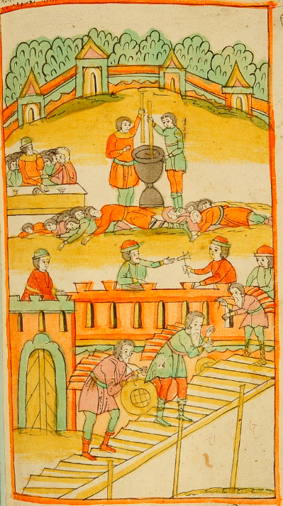
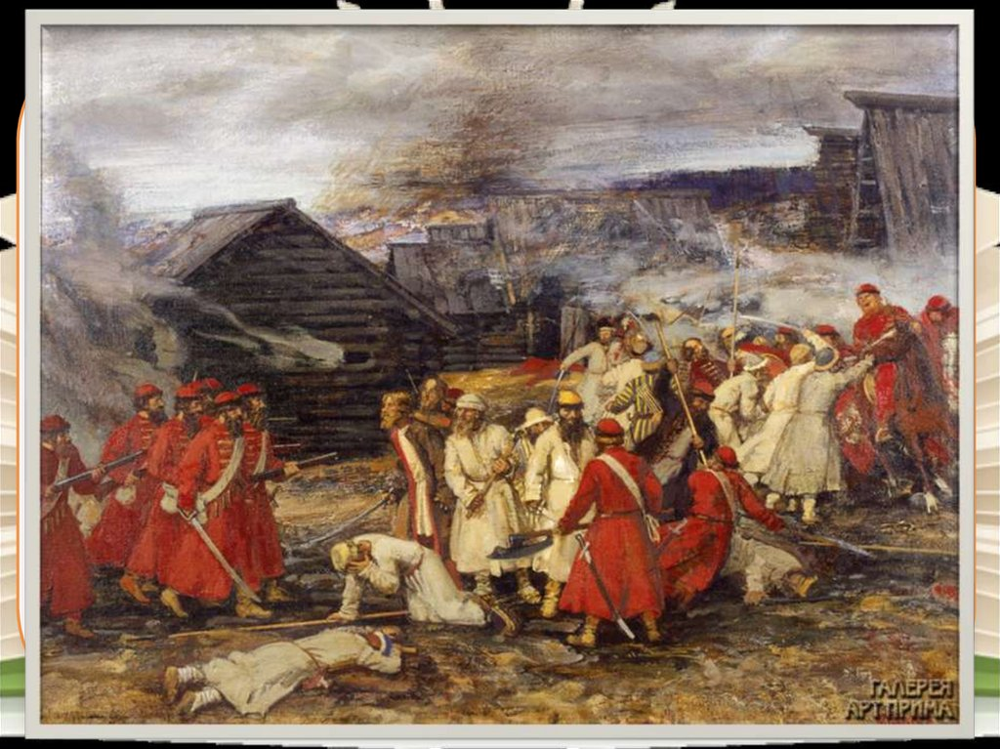

Великий голод. Восстание Хлопка
Три года, с 1601 по 1603, были неурожайными, даже летом не прекращались заморозки, а в сентябре выпадал снег. По некоторым предположениям, причиной этого было извержение вулкана Уайнапутина в Перу 19 (29) февраля 1600 года и последовавшая за этим вулканическая зима. Разразился страшный голод, жертвами которого стало до полумиллиона человек. Массы народа стекались в Москву, где правительство раздавало хлеб и деньги нуждающимся. Однако эти меры лишь усилили хозяйственную дезорганизацию. Помещики не могли прокормить своих холопов и слуг и выгоняли их из усадеб. Оставшиеся без средств к существованию люди обращались к грабежу и разбою, усиливая общий хаос. Отдельные банды разрастались до нескольких сотен человек. Отряд атамана Хлопка насчитывал до 600 человек.

Основу восставших составляли холопы, сбежавшие из усадеб по причине великого голода 1601—1603 годов, поскольку их хозяева отказывались кормить их, но при этом надеялись по окончании голода предъявить на них права. Промышлявшие разбоем получали активную поддержку крестьянского населения, что затрудняло борьбу с подобными отрядами. Восстание не имело политический характер. «Разбойники» не пытались установить контроль над городами и крепостями. Целью отряда Хлопка и иных подобных им был не захват власти, а добыча средств к существованию ставшими привычными в условиях голода способами. Восстание охватило многие уезды запада, центра и юга Русского государства, но особенно сложным положение было в западных районах страны, где, с одной стороны, при невысокой естественной урожайности были наиболее тяжёлыми последствия массового голода, с другой — проходили торговые пути, связывающие Россию с Польшей и Швецией. Известен т. н. «Бельский наказ» Разбойного приказа, в котором описаны полномочия направляемых из Москвы для борьбы с разбоями уполномоченных. Для борьбы с преступностью предполагалось опираться на местные силы и помощь сельских старост, а дворянское ополчение к поимке восставших не привлекать. Принятые меры существенно не изменили ситуацию. В августе 1603 года из Москвы в западном направлении для уничтожения отряда Хлопка, численность которого доходила до 600 человек, был отправлен отряд из 100 стрельцов под начальством окольничего Ивана Басманова. Однако в середине сентября правительственные войска попали в засаду, устроенную мятежниками. В ходе боя Иван Басманов был убит, однако стрельцам удалось одержать победу над восставшими холопами и пленить раненого Хлопка Косолапа, который вскоре был казнён. Согласно надгробию Басманова, битва состоялась 12 сентября 1603 года. С уничтожением отряда Хлопка массовые разбои и грабежи в Русском государстве не прекратились, часть холопов бежала на юг, где затем участвовала в восстании Болотникова и других событиях Смуты. По указу царя Бориса Годунова было проведено тщательное расследование обстоятельств восстания, поскольку среди восставших находились слуги опальных бояр.
